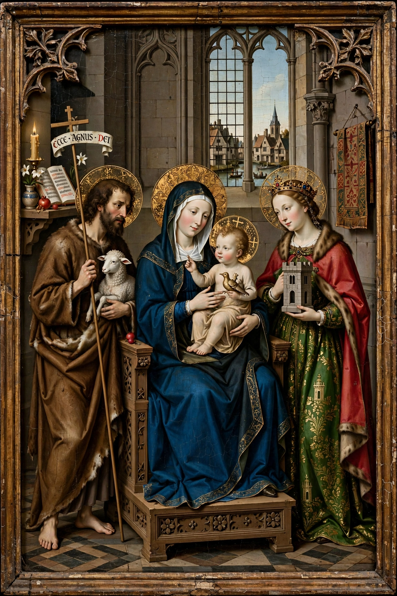

The Master of Flémalle is the notname given to an Early Netherlandish painter active in the early 15th century, generally identified with Robert Campin (c. 1375 – 26 April 1444) of Tournai.

| Master of Flémalle | |
|---|---|
| Known for | Painting |
| Notable work | Mérode Altarpiece, Werl Triptych |
| Movement | Early Netherlandish painting |
The name derives from panels once thought to come from an abbey at Flémalle. Art historians link the works to Campin's workshop, where Rogier van der Weyden trained.
Attributed works include the Mérode Altarpiece (c. 1427–1432, Metropolitan Museum), the Werl Triptych (1438, Prado), and portraits notable for detailed domestic interiors and disguised symbolism.